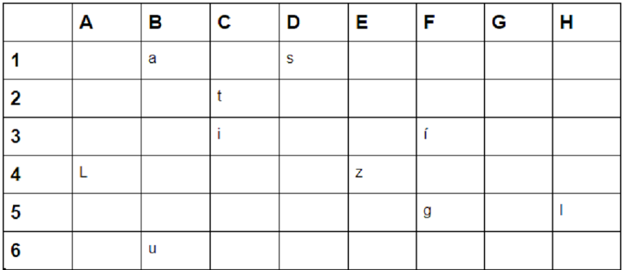

Ara, ja tens la llista de sospitosos que van estar amb el monjo Climent com diu el diari. Potser aquesta llista de monjos, et podria servir per solucionar algun enigma. Prova-ho. El diari, també diu que la segona part d'aquest està a la biblioteca de Ripoll, a on no tenim accés, per tant necessitarem la combinació de lletres que obren la porta i saber quin és el llibre indicat.
